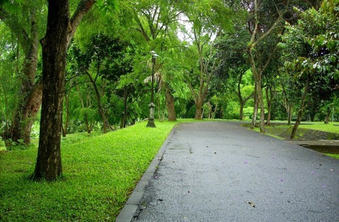
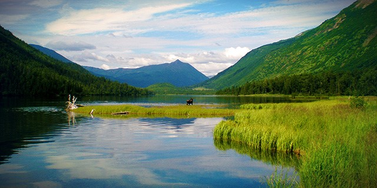
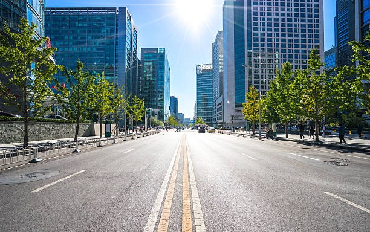
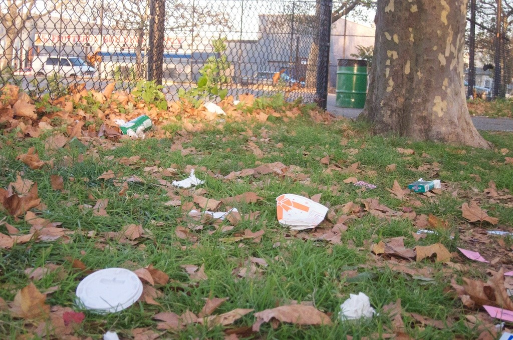
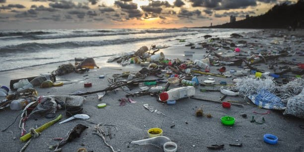
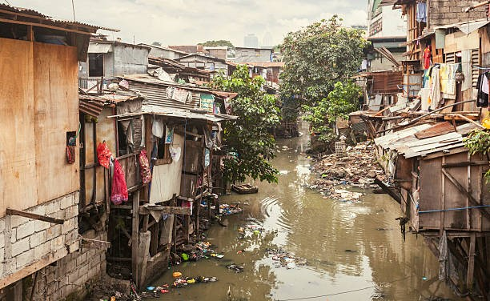

  
Halo, Hello, Annyeong, Konnichiwa, Ni Hao, Guten Tag, Sawadee Kha, dan Selamat Datang Bapak/Ibu Guru ke website kami! Untuk memenuhi nilai SAS TIK, kami dari kelompok 3 kelas IX-3 membuat dan menyusun sebuah website yang bertemakan Peduli Lingkungan. Saat ini, banyak sekali orang-orang yang kurang sadar atas lingkungan kami yang semakin lama semakin tercemar dan berkurang kualitasnya. Polusi ditemukan di segala sisi, sampah dibuang secara sembarangan, air kotor, tanah tidak subur, dan masih banyak lagi. Bisa dilihat dari foto-foto di samping, ada lingkungan yang beberapa tahun lalu sangat asri, dan sekarang yang penuh sampah dan polusi. Kami harap website ini dapat meningkatkan wawasan kita semua dalam pentingnya untuk peka dan peduli dengan lingkungan kami. Selain itu, website ini dan segala isinya kami buat bersama-sama dengan semaksimal mungkin. Jadi, semoga menikmati dan selamat membaca!
  